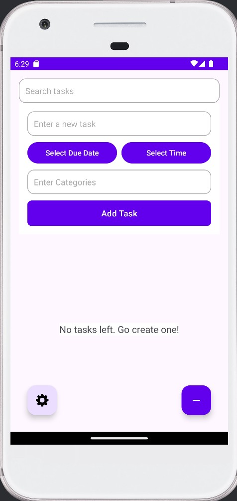
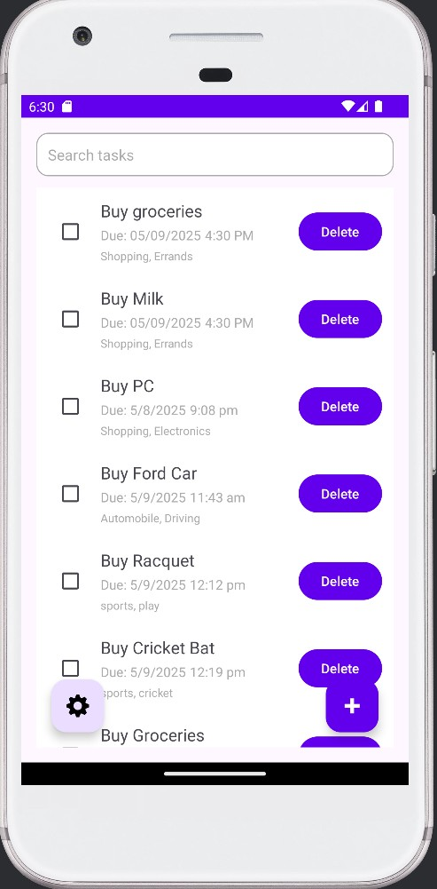

ToDo App
Description
To Do app is an Android application built with Kotlin that allows users to create, manage, and organize their tasks. Key features include adding tasks with titles, optional due dates and times, and categories/tags. Users can edit existing tasks to update these details and search the list based on any of this information. The app displays tasks in a list, showing the title, completion status, and any set date, time, or categories.
Challenges
- Challenge: Adding several features (Due Dates, Search, Categories/Tags) simultaneously can be complex.
Solution: Breaking down the implementation into individual features and then further into changes needed per file (ToDoItem, layouts, MainActivity, ToDoAdapter). Providing code snippets for specific modifications helped manage complexity.
- Challenge: The existing simple edit dialog only handled the task title. It needed to be expanded to allow editing
the due date, time, and categories.
Solution: Updated dialog_edit_task.xml to include TextViews and Buttons for the date and time, and an EditText for categories. In the showEditDialog function in ToDoAdapter.kt, we added findViewById calls for these new elements, populated them with the current task data, implemented click listeners for the date and time buttons to show the respective dialogs, and updated the "Save" button's logic to retrieve and save the values from all the input fields.
Outcomes
- Extended Task Data: Each ToDoItem can now store a title, completion status, an optional due date, an optional due time, and optional categories/tags.
- Enriched Task Display: The task list now visually displays the due date, due time, and categories for each item (when available).
- Date and Time Selection: Users can select a due date using a DatePickerDialog and a due time using a TimePickerDialog when adding or editing tasks.
- Category Input: Users can input categories (as a comma-separated string) when adding or editing tasks.
- Enhanced Editing: The edit dialog now allows modifying the task title, due date, due time, and categories.
- Search and Filtering: Users can search and filter the To Do list based on the task title, due date, due time, or any of the assigned categories.
- Improved UI Layout: The layout for task items includes horizontal arrangement for date and time with proper spacing.


Technologies Used
- Kotlin
- Android SDK
- Android Studio
- Nodejs
- MongoDB